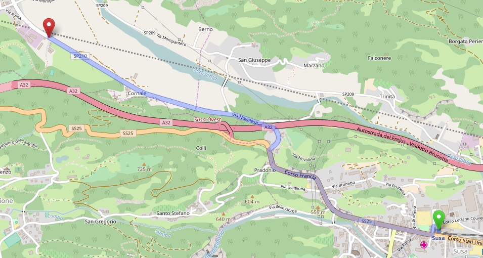
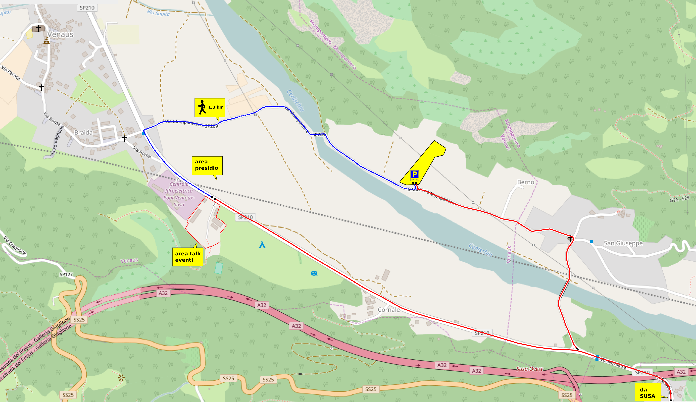

Borgata 8 Dicembre, Venaus, Val di Susa
Treno
da qualsiasi località arrivi, la stazione ferroviaria da raggiungere è quella di SUSA (TO). Ti invitiamo caldamente a non utilizzare (se ti è possibile) l’alta velocità, è costosissima ed ha già fatto enormi danni in tutti i territori che ha attraversato.
Hackit0x14 dista dalla stazione di SUSA circa 3,3 km. Se non hai un bagaglio troppo pesante ed è una bella giornata puoi decidere di farti una camminata o fare autostop. Il percorso da seguire è indicato nella piantina qui sotto: 
Nel giorno di arrivo (Giovedì 15) e di partenza (Domenica 18) ci sarà un servizio navetta tra la stazione ed Hackit0x14. Dato che tutto è gestito da volontari e che la navetta probabilmente sarà solo una, potresti dover aspettare un po’ … rilassati e non ti arrabbiare.
Auto
Se vieni in auto, una volta raggiunta SUSA (TO), segui lo stesso percorso indicato sopra x i camminatori. Quando arrivi ad Hackit0x14 potrai scaricare i bagagli ed i tuoi compagni di viaggio nei pressi del campeggio, dopo di che dovrai portare l’auto nel parcheggio (non custodito). Non è salutare, per ragioni di sicurezza, lasciare l’auto sul bordo della strada, rischi multa e rimozione (sappilo). Lasciata l’auto al parcheggio (vedi sotto: area gialla con la “P”), seguendo il percorso blu della mappa, in meno di 20 minuti sarai ad Hackit0x14. 
Aereo + Treno
è un po’ più complicato! ma se non hai alternative … buona fortuna! Da qualsiasi località arrivi, l’areoporto più vicino è quello di Torino Caselle. Una linea ferroviaria collega l’Aeroporto con la stazione Dora GTT di Torino in circa 20 minuti. Dalla stazione Dora GTT devi prendere un autobus o autobus + METRO per raggiungere la stazione ferroviaria di Porta Nuova e da lì un treno per SUSA. Per dettagli, prima di partire ti consigliamo di verificare le possibilità qui e qui.